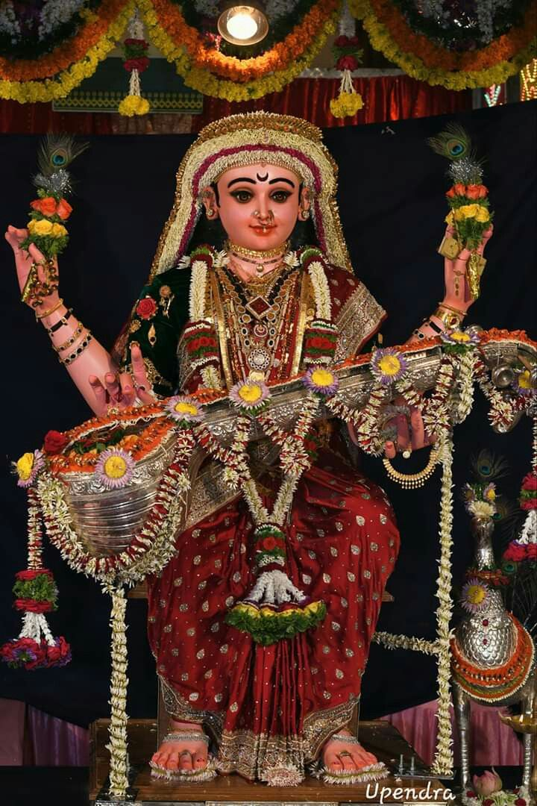
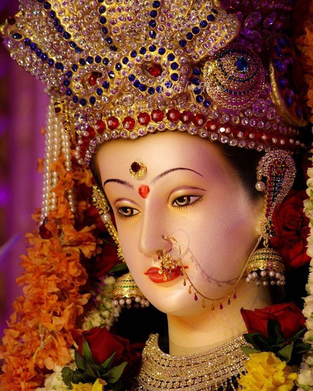

Types Of Navratri
Sharda Navratri
Sharada Navaratri is the most celebrated of the four Navaratri, named after Sharada which means autumn. It commences on the first day (pratipada) of the bright fortnight of the lunar month of Ashvini.
Chaitra Navratri

Chaitra Navaratri is the second most celebrated Navaratri, named after vasanta which means spring. It is observed during the lunar month of Chaitra (March–April).
Megha Navratri
Magha Navaratri is observed during the lunar month of Magha (January–February). This Navratri is also known as Gupt (secret) Navratri.
Ashada Navratri
Ashada Navaratri, also known as Gupta Navaratri, is observed during the lunar month of Ashadha (June–July), during the start of the monsoon season.